Dinner time!
Food words, meals, listening, speaking and a little science. Let’s play and learn! 🍽️
Food words
Look at the original page, listen, and choose the correct food word.
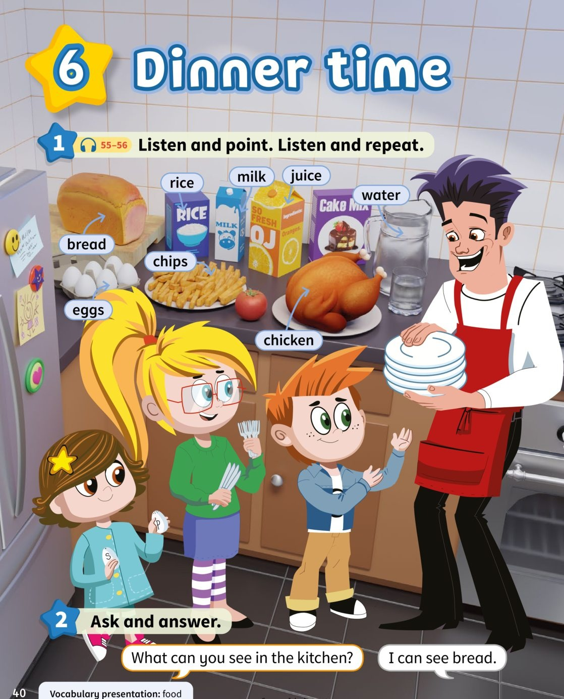
What can you see in the kitchen?
Choose the word that matches the picture.
Food vocabulary
Tap a word to practise it.
⭐ Extra practice · 4 questions
Answer all four questions about this page. Try again if you make a mistake.
1. Which word means a drink?
2. Which food is made from grain?
3. Which word starts with the /ch/ sound?
4. Choose the correct spelling.
Shopping list maze
Use the original activity page. Read the shopping lists and choose foods that belong on a shopping list.
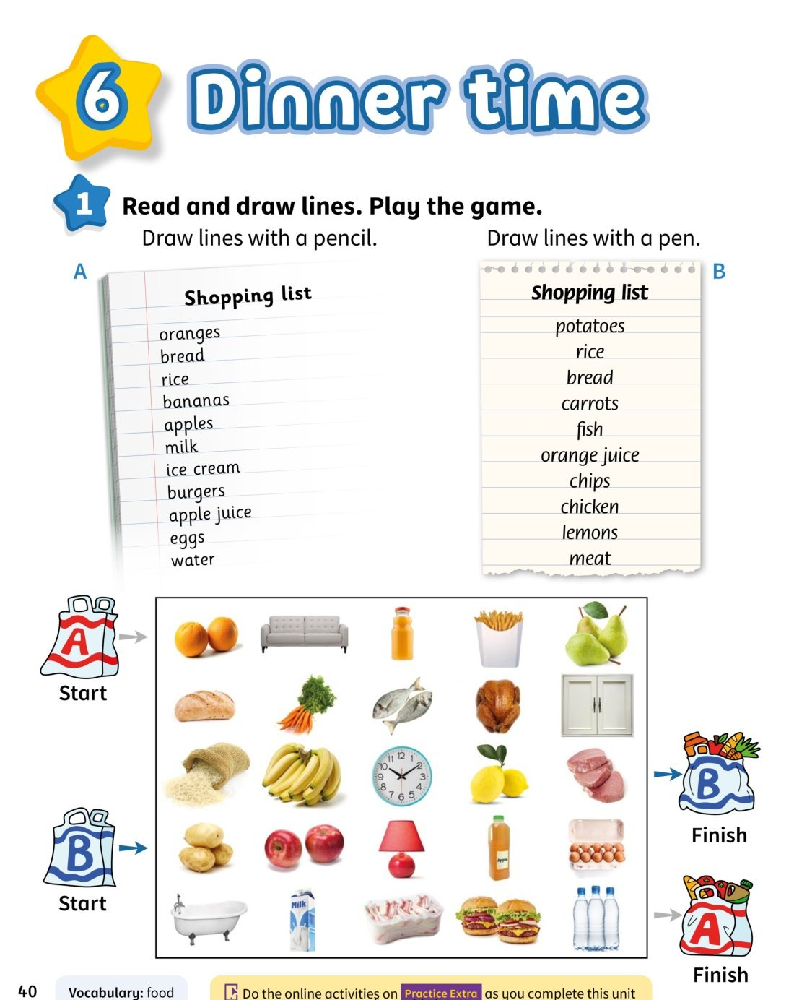
Which item is food?
Food or not food?
⭐ Extra practice · 4 questions
Answer all four questions about this page. Try again if you make a mistake.
1. Which item belongs on a shopping list?
2. Which one is food?
3. Which word is a fruit?
4. Which item is not food?
Meals through the day
Follow the day from morning to evening. Listen to the song and answer.
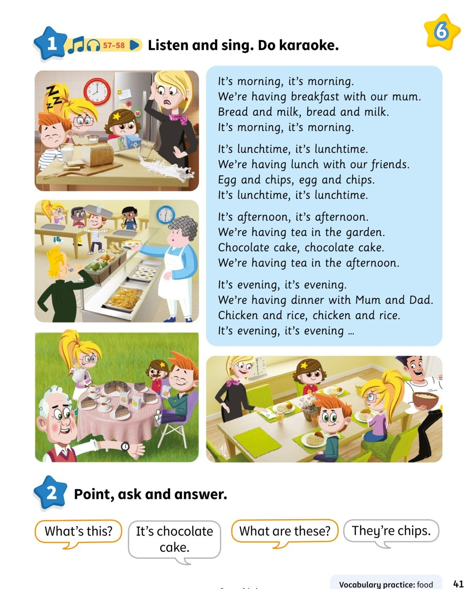
When do we eat dinner?
Ask and answer
Tap a phrase to hear it.
⭐ Extra practice · 4 questions
Answer all four questions about this page. Try again if you make a mistake.
1. When do we usually eat breakfast?
2. Which pair is mentioned for breakfast in the song?
3. Which meal is in the evening?
4. Choose the correct sentence.
Colour the food
Use the colouring instructions on the original page, then check your food vocabulary.
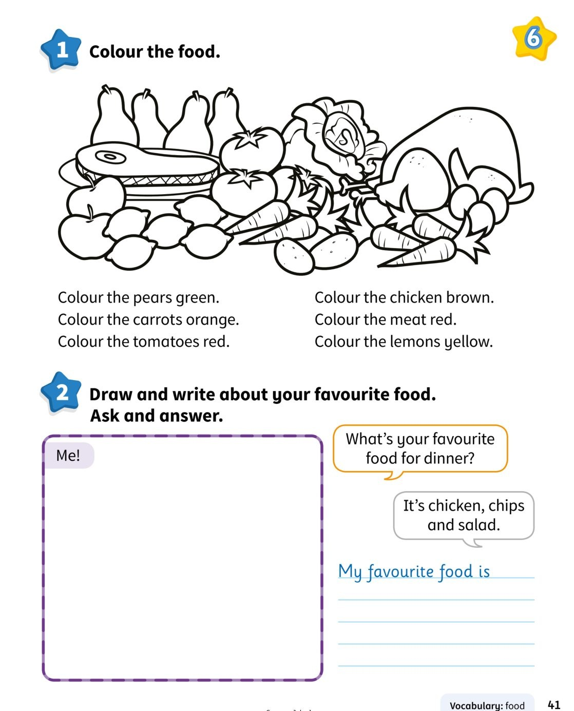
Which food should be orange?
Choose a food word
⭐ Extra practice · 4 questions
Answer all four questions about this page. Try again if you make a mistake.
1. Which is a vegetable?
2. Which food can be orange?
3. Which one is a drink?
4. Which word is spelled correctly?
At the table
Watch the language video first, then look at the original page and listen to the dialogue.
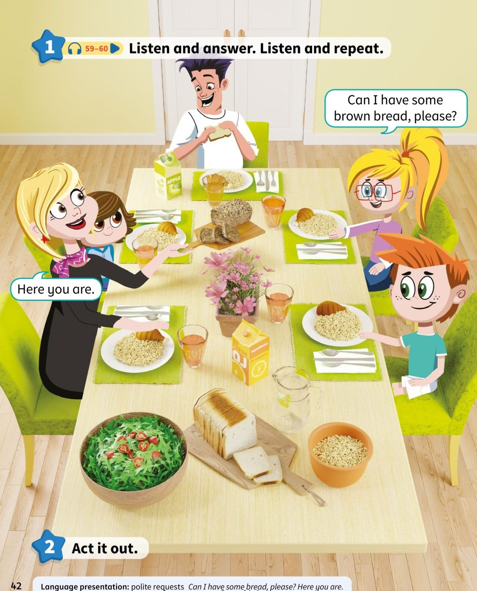
Complete the polite request
“Can I have some brown bread, please?”
⭐ Extra practice · 4 questions
Answer all four questions about this page. Try again if you make a mistake.
1. How do you ask politely for food?
2. What can you say when giving something?
3. Complete: Can I have ___ chicken, please?
4. Choose the polite reply.
Listen and circle
Listen to Activity Book Track 19 and answer the questions using the original page.
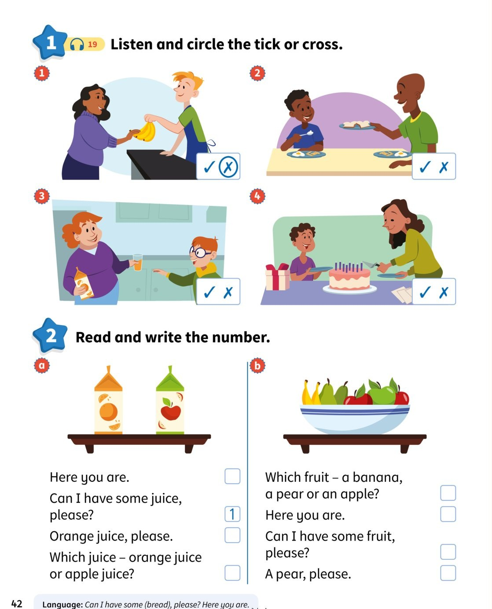
What does the speaker ask for?
⭐ Extra practice · 4 questions
Answer all four questions about this page. Try again if you make a mistake.
1. Which phrase is polite?
2. What should you say after receiving food?
3. Which is a drink?
4. Complete: Here ___ are.
Food bingo
Play bingo with the food pictures on the original Pupil’s Book page.
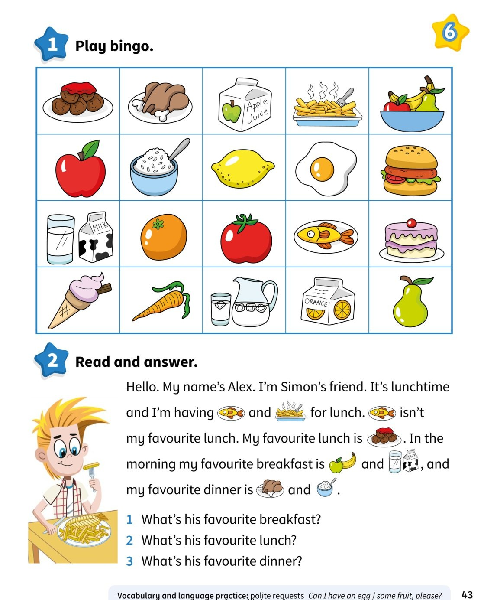
Which one is a fruit?
⭐ Extra practice · 4 questions
Answer all four questions about this page. Try again if you make a mistake.
1. Which one is a fruit?
2. Which one is not a drink?
3. Which food is usually made from potatoes?
4. Which word is plural?
Starters reading and writing
Read the original text about Alex and choose the correct food words.
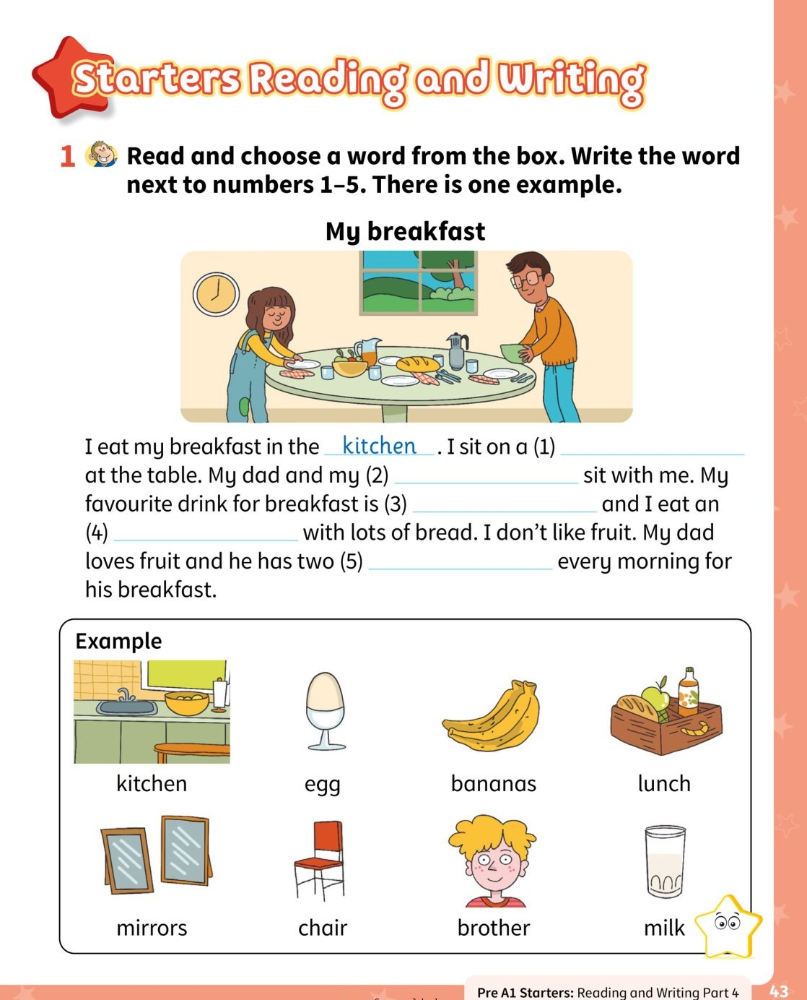
Where does Alex eat breakfast?
What can you drink?
⭐ Extra practice · 4 questions
Answer all four questions about this page. Try again if you make a mistake.
1. Which meal do we eat in the morning?
2. Choose the correct food word.
3. Which sentence uses “like” correctly?
4. Which is a healthy drink?
Monty’s sounds and spelling
Watch Monty’s video, then listen to Track 61 and practise the food sounds.
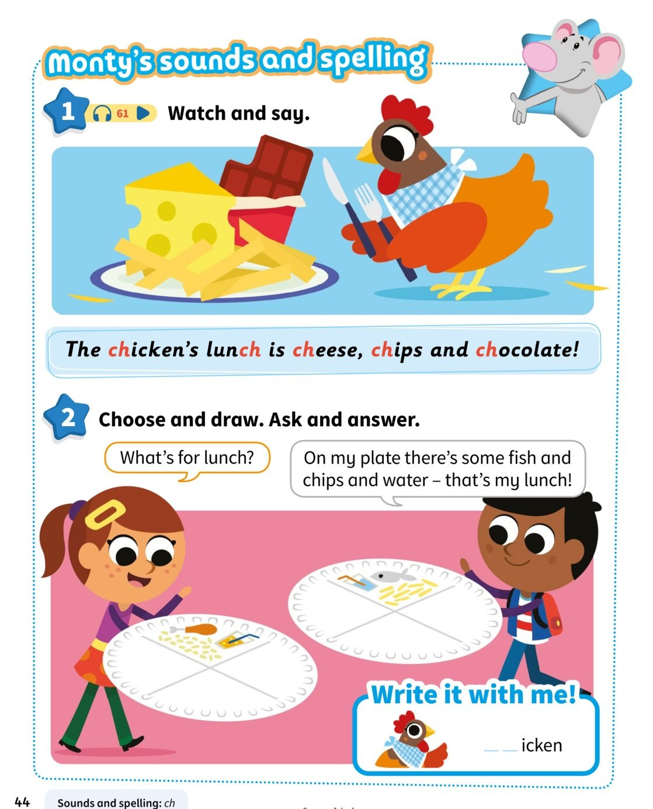
Finish the sentence
The chicken’s lunch is cheese, chips and …
⭐ Extra practice · 4 questions
Answer all four questions about this page. Try again if you make a mistake.
1. Which word begins with “ch”?
2. Choose the correct spelling.
3. Which word has “ch” in the middle?
4. Which letter combination is in “chicken”?
Sounds and spelling practice
Use the original Activity Book page and practise spelling food words.
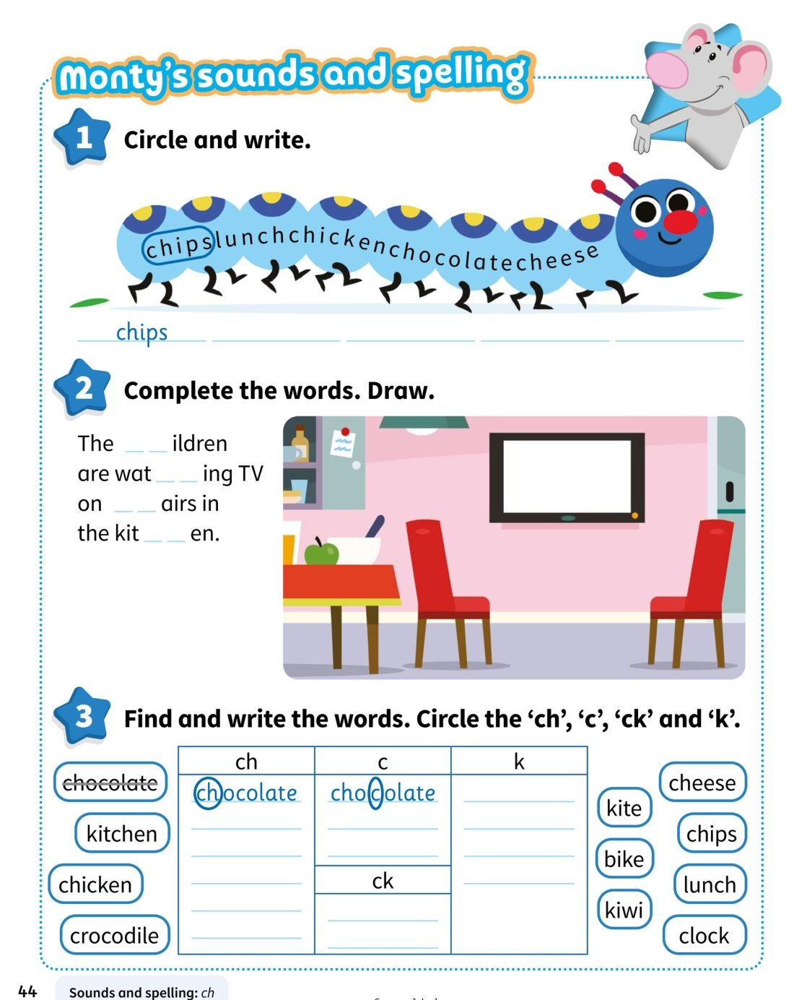
1. Unscramble the food word
🔤 h · c · i · p · s
When you solve it, drag the word into the right box below.
2. Drag each word into the correct box
First solve the scrambled words. Then drag the food or drink word to its category. On a tablet, you can tap a word and then tap a box.
🍽️ FOOD
Drag food here
🥤 DRINKS
Drag drinks here
Choose the spelling
⭐ Extra practice · 4 questions
Answer all four questions about this page. Try again if you make a mistake.
1. Unscramble: s p i h c
2. Which is spelled correctly?
3. Complete: r _ c e
4. Which word rhymes most closely with “rice”?
Story time
Watch the story first, then listen to Tracks 62 and 63. Follow the story on the original page.
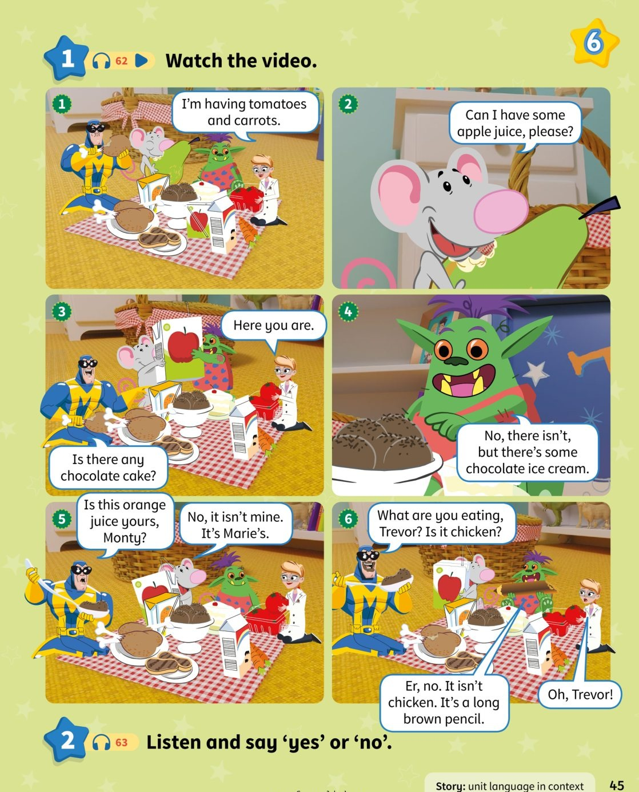
What does the story talk about?
⭐ Extra practice · 4 questions
Answer all four questions about this page. Try again if you make a mistake.
1. What is the family making for dinner in the story?
2. Which drink is mentioned as a favourite?
3. What do the children say about Dad’s Star dinner?
4. Which meal is mentioned at school?
My picture dictionary
Complete the food words using the original picture dictionary.
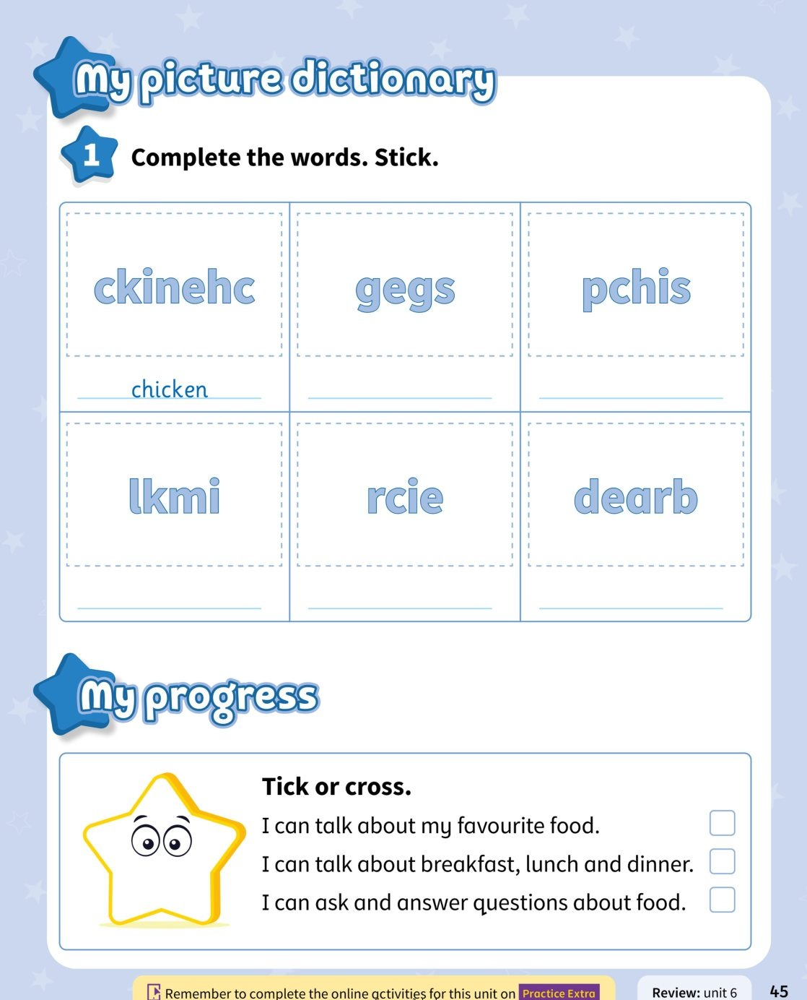
Complete the word
ch _ cken
Unscramble
g · e · g · s
Match the food words to the pictures
Tap a word, then tap its matching picture. You can also drag a word onto a picture. Tap 🔊 to hear each word.
⭐ Extra practice · 4 questions
Answer all four questions about this page. Try again if you make a mistake.
1. Complete the word: ch _ cken
2. Unscramble: g e g s
3. Which word has five letters?
4. Which is spelled correctly?
Marie’s science: Where does food come from?
Watch the CLIL video, study the original page, and decide where food comes from.
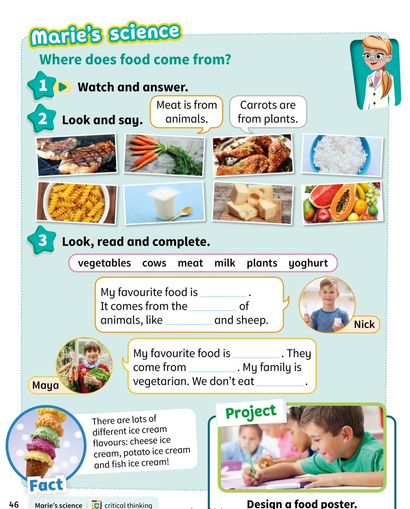
Carrots come from …
Complete the sentence
My favourite food comes from an …
⭐ Extra practice · 4 questions
Answer all four questions about this page. Try again if you make a mistake.
1. Where does milk come from?
2. Which food grows in the ground?
3. Which food comes from a plant?
4. Which is an animal?
Lunch menu
Listen to Track 20, then complete the original Activity Book food menu.
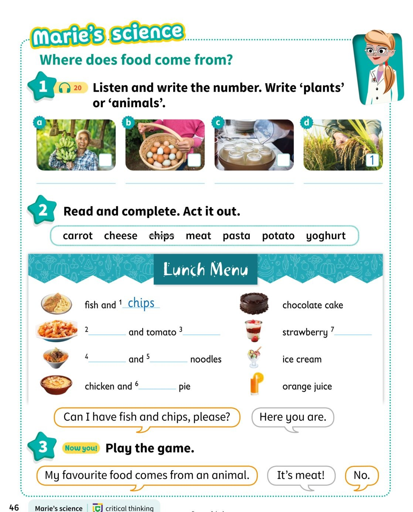
Which word belongs in “Lunch Menu”?
⭐ Extra practice · 4 questions
Answer all four questions about this page. Try again if you make a mistake.
1. Which word belongs in a lunch menu?
2. Which is food?
3. Which is a drink?
4. Which meal is usually eaten midday?
Trevor’s values: Eat good food
Listen to Track 64 and answer the questions about breakfast, lunch and dinner.
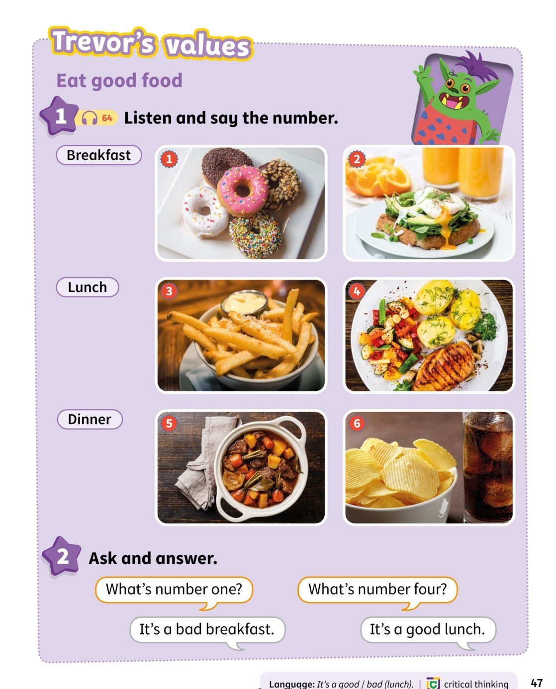
Which meal is usually in the morning?
What number four?
⭐ Extra practice · 4 questions
Answer all four questions about this page. Try again if you make a mistake.
1. Which is a healthy choice?
2. Which meal do you eat in the evening?
3. Complete: I’m ___ rice.
4. Which sentence is Present Continuous?
Draw your favourite food
Use the original page to plan a favourite breakfast, lunch and dinner. Then practise asking a friend.
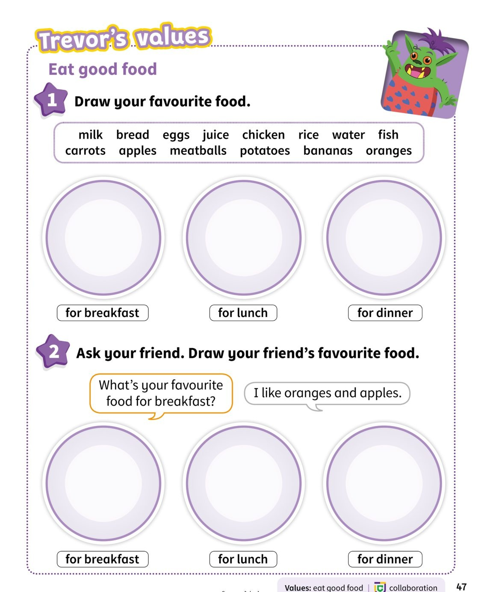
Choose your favourite meal
⭐ Extra practice · 4 questions
Answer all four questions about this page. Try again if you make a mistake.
1. Which phrase tells your preference?
2. Complete: My favourite ___ is chicken.
3. Which question asks about preference?
4. Choose a complete sentence.
🍓 Super food quiz!
Answer the extra questions to earn bonus stars. You can try again if you make a mistake.
1. Which food can come from a cow?
2. What do we usually eat for breakfast?
3. Choose the correct sentence.
4. Which one is a drink?
5. Make your own sentence
Complete: “For breakfast, I like eating…”
You did it!
You completed Unit 6 · Dinner time!
You practised food vocabulary, meals, polite requests, listening, spelling and where food comes from.
🎮 Wordwall bonus games
Finish the lesson with these three interactive games.
▶ Game 1 · Dinner time▶ Game 2 · Unit 6 Dinner time▶ Game 3 · Dinner time challenge